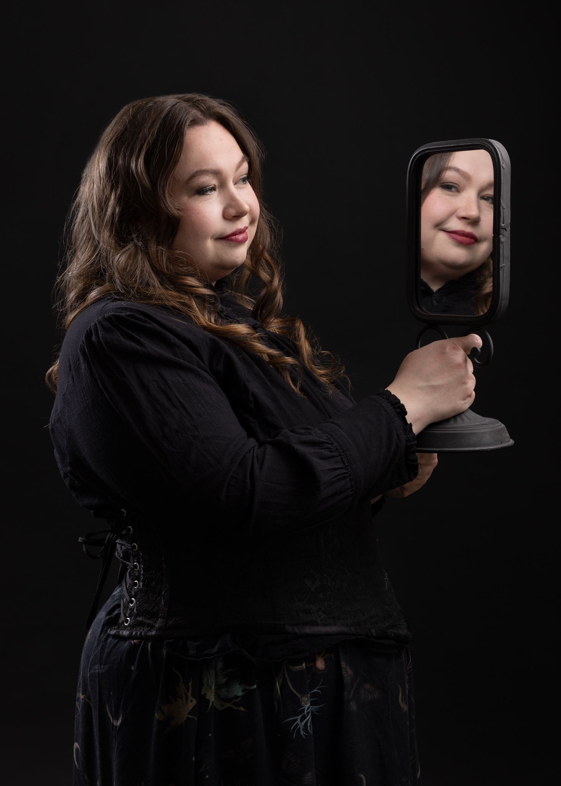

About Anna Aslin – Fantasy Romance Author
I grew up on a farm in northern Finland, surrounded by forests and open fields that seemed to stretch endlessly. Stories became part of my life early on, especially those filled with magic. I could listen to them for hours, and before long I became a voracious reader myself. At the age of nine, I discovered an entire section of books dedicated to magic, knights, castles, witches and wizards—fantasy books that felt like home from the very beginning.
I began writing my first fantasy story at thirteen after a vivid idea came to me while skiing through the forest. Over the following year, I filled nine notebooks with that story. What started as a single tale quickly expanded into something much larger, first a trilogy and eventually a far longer fantasy series. Although The Firetree remains unfinished despite several rewrites, it still holds a special place in my journey as a writer—perhaps one day I will return to it.
Today, I write fantasy romance stories that combine magic, relationships and immersive worlds. My work ranges from gothic fantasy romance, such as the Demons of Aldermere series, to more epic and medieval-inspired fantasy like the Relics of Wing and Flame series, as well as standalone fantasy novels. I am especially drawn to stories where romance and fantasy intertwine with darker themes, complex characters and richly built worlds. Most of my main characters are older than those typically found in fantasy romance, and many of them are also queer. I am fascinated by the ways in which love can defy conventions and expectations, and I strive to explore that in my writing.
In addition to writing, I sing in the local geek choir Pikselit, play World of Warcraft, dance tribal and historical dances, and spend much time outdoors in the warm months hiking in nature and gardening. Naturally I read a lot, particularly fantasy with romance, but also some historical fiction and science fiction, though fantasy really has my heart.